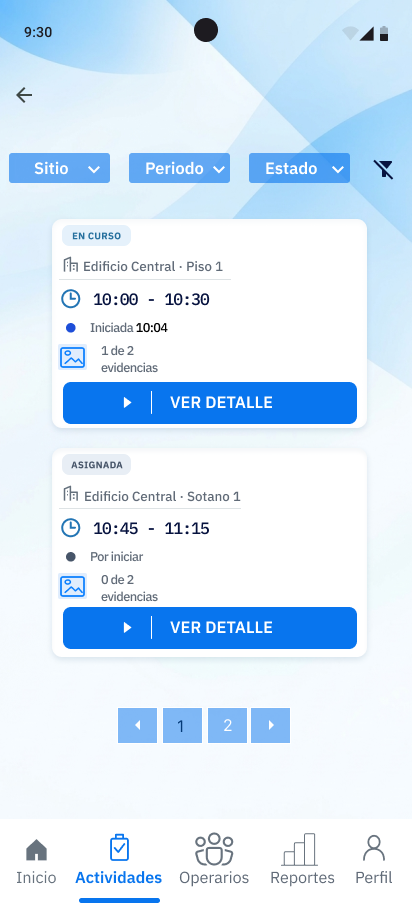
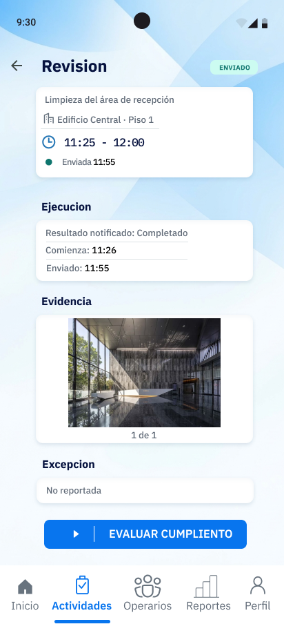
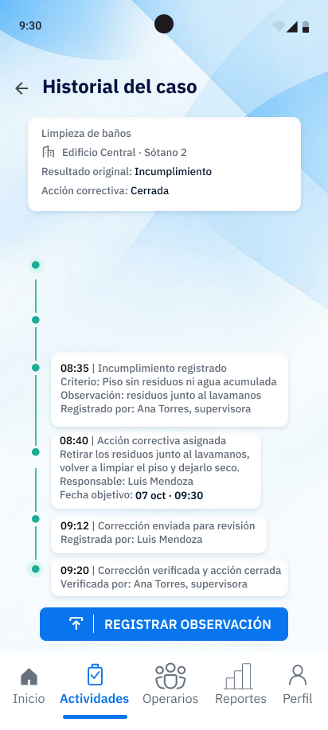

01
Registro de campo
La ejecución y su evidencia, juntas.
La actividad programada, sus datos de ejecución y la foto quedan vinculados antes de evaluar el cumplimiento.
Trazabilidad operativa para limpieza B2B
Service Compliance conecta cada obligación con su ejecución, la evidencia requerida y la respuesta ante una desviación. Supervisores y operarios trabajan sobre la misma historia.


Del registro a la respuesta
Las pantallas del prototipo convierten la ejecución y su evidencia en un caso trazable: se conserva el resultado, la observación y la respuesta posterior.
La actividad programada, sus datos de ejecución y la foto quedan vinculados antes de evaluar el cumplimiento.

El historial conserva el incumplimiento, la acción correctiva y su verificación en orden temporal, sin borrar el contexto original.
La cadena de trazabilidad
El valor no está en capturar una foto o marcar una tarea. Está en mantener la relación entre el compromiso, el trabajo realizado y la respuesta posterior.
Ver la experiencia por rolDefine ubicación, frecuencia, ventana de ejecución y evidencia aplicable.
El operario recibe una instrucción concreta y registra el resultado desde el móvil.
Fotos, ubicación, QR, checklist o firma se solicitan según cada obligación.
El sistema relaciona el resultado con la ventana y los criterios definidos.
Una desviación y su acción correctiva quedan visibles en el mismo historial.
Dos roles, una referencia común
Cada experiencia prioriza el trabajo real de quien la usa, sin trasladar la complejidad administrativa al campo.
Consulta obligaciones pendientes, observadas o vencidas; revisa evidencia y sigue acciones correctivas desde una sola historia.
Sede Lince · hasta 10:30
El operario ve qué hacer, dónde, cuándo y qué necesita registrar. También puede comunicar un impedimento sin que se pierda su contexto.
No buscamos añadir otro checklist. Buscamos que cada resultado pueda explicarse desde su obligación original.
La diferencia importante
Service Compliance conserva el estado original, la excepción detectada y la acción tomada después. Así, el equipo puede explicar el servicio sin reescribir lo ocurrido.
Alcance transparente
Service Compliance es una propuesta académica en validación, enfocada inicialmente en prestadoras de limpieza B2B de Lima Metropolitana.
Opervia
Seis estudiantes de Ingeniería de Software construyen Service Compliance desde la investigación del problema hasta la arquitectura y la validación del producto.
Facilitar que las empresas prestadoras gestionen y expliquen el cumplimiento de sus operaciones con información trazable, clara y accesible.
Consolidar una solución especializada en servicios tercerizados donde la trazabilidad del trabajo sea crítica.
Preguntas frecuentes
Respuestas basadas en el alcance documentado del proyecto.
Relaciona lo planificado con lo ejecutado y su evidencia para reducir el esfuerzo de reconstruir el estado de una obligación entre chats, hojas, fotos y formatos separados.
Para empresas prestadoras de limpieza tercerizada. La experiencia inicial contempla supervisores o coordinadores y operarios de campo en Lima Metropolitana.
No. La evidencia es configurable según la obligación y puede incluir fotografía, ubicación, QR, NFC, checklist, firma u otro mecanismo definido por la operación.
El diseño contempla almacenamiento local temporal para registrar la ejecución en campo y sincronizarla posteriormente cuando exista conectividad.
Todavía no. Es una propuesta académica en fase de construcción y validación. El prototipo permite revisar el flujo y conversar sobre pilotos, no demuestra aún product-market fit.
Revisa la experiencia completa
Explora las pantallas de alta fidelidad para supervisión, registro de campo, incidencias, correctivas e historial.